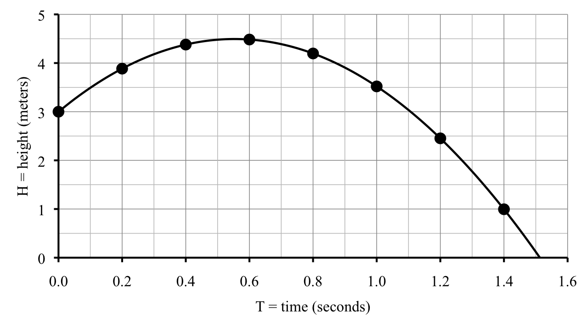
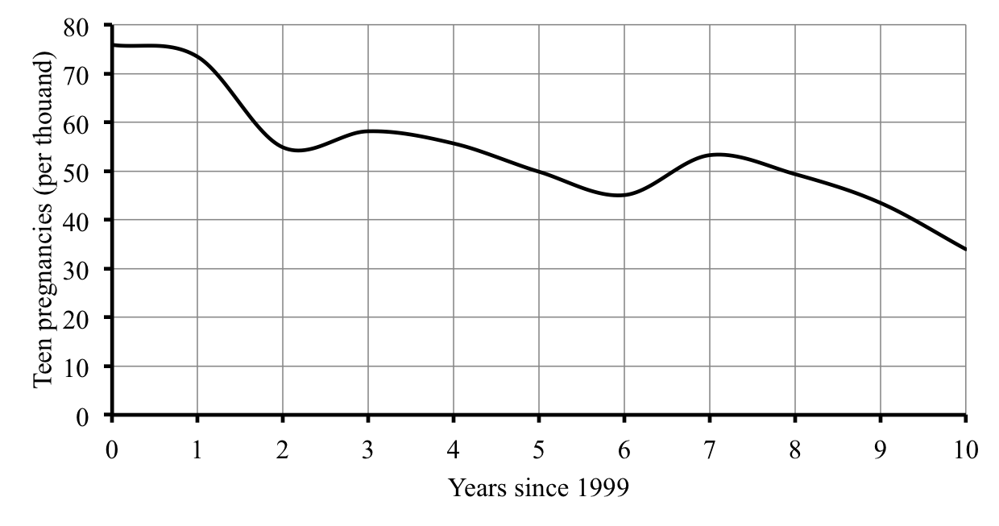

A diver bounces on a 3-meter springboard. Up she goes. A somersault, a twist, then whoosh, into the water. The table shows the diver’s height as a function of time,
\(T\)
0
0.2
0.4
0.6
0.8
1.0
1.2
1.4
\(H\)
3.00
3.88
4.38
4.48
4.20
3.52
2.45
1.00
where
\(H=\) diver’s height (meters) \(\sim\) dep
\(T=\) time (seconds) \(\sim\) indep
In case you’re wondering, 3 meters is nearly 10 feet up and the highest height listed, 4.48 meters, is close to 15 feet above the water. More on how we figured those numbers out in the next section, but thought you might like to know.
How fast is she moving? The diver starts at 3 meters, which is the height of the springboard, and 0.2 seconds later she’s up to 3.88 meters. That means during the first 0.2 seconds, the diver went up
What about during the next 0.2 seconds? Does she move faster, slower, or the same? During this time, her height changed from 3.88 meters to 4.38 meters. In these 0.2 seconds she rose
See how we put parentheses around both the top and bottom of the fraction? We needed them to force the calculator to do the subtractions first and division second. The usual order of operations would do it the other way around: multiplication and division before addition and subtraction. (If you need a reminder, the full list of the order of operations appears later, in Section 1.5.) Because the top and bottom of the fraction each have meaning in the story, we continue to calculate them separately, but feel free to do the whole calculation at once if you prefer.
Notice that we are subtracting like terms: meters from meters and then seconds from seconds. It would not make sense to mix. Think:
so we don’t want to mix units because that would be like taking cookies away from children.
In our story, we calculated the speed of the diver. In general, that number is the rate of change of the function over that interval of values.
Rate of change formula.
\begin{equation*}
\text{rate of change = }\frac{\text{change dep}}{\text{change indep}}
\end{equation*}
Notice how the change in dependent variable (height, in meters) is on top of the fraction and the change in independent variable (time, in seconds) is on the bottom. That makes sense in our example because speed is measured in meters/second. The units can help you keep that straight.
\begin{equation*}
\text{units for rate of change} = \frac{\text{units for dep}}{\text{units for indep}}
\end{equation*}
Back to our diver. During the next time interval she’s moving even slower.
What does a negative speed mean? During this time interval her height drops. She’s headed down towards the water. Her speed is 1.4 meters/sec downward. The negative tells us her height is falling. What goes up, must come down. Sure enough.
You may notice that the signs for subtraction and negation each look like \(-\text{.}\) On the calculator these are two different keys. The subtraction key reads just \(-\text{.}\) The negation key often reads and is done before the number. This does not mean you type in parentheses, just hit the one key that is labeled already. (If your calculator does not have a key labeled (-), look for a key labeled \(\text{+/-}\) instead. That is not three keys, just one labeled \(\text{+/-}\) Often that key needs to follow the number, so enter
Let’s graph our function. Notice that time is on the horizontal axis because it’s the independent variable and height is on the vertical axis because it’s our dependent variable: height depends on time.

As usual we drew in a smooth curve connecting the points, which illustrates our best guesses for the points we don’t know and we continued the graph until the height was zero (when the diver hits the water). The values from our table are indicated with big points to help explain what’s going on.
There is a way to see the rate of change from the graph. In the case of our diver, the graph looks like a hill. The curve goes uphill at first. Between the first two points it is rather steep and the rate of change is 4.4 meters/sec there. The next segment is less steep and that’s where the rate of change is less, down to 2.5 meters/sec. The third line segment is almost flat and that’s where the rate of change is only 0.5 meters/sec. Aha. The rate of change corresponds to how steep the curve is.
We notice the same connection between the rate of change and steepness of the curve for the downhill portion, only this time all the rates of change are negative. The first downhill segment is not very steep and the rate of change is -1.4 meters/sec there. The next downhill segment has rate of change -3.4 meters/sec and the graph is steeper. The next two downhill segments are steeper and steeper yet and this time with rates of change -5.35 and -7.25 meters/sec.
A little more vocabulary here. For the uphill portion of the graph, from 0 to just before 0.6 seconds, the rate of change is positive. The function is increasing there: as the independent variable gets larger, so does the dependent variable. After about 0.6 seconds, the graph is downhill and the rate of change is negative. The function is decreasing there: as the independent variable gets larger, the dependent variable gets smaller.
When does the diver’s height stop increasing and start decreasing? When she’s at the highest height, some time just before 0.6 seconds into her dive. Before then her rate of change is positive. After that time her rate of change is negative. So, at the highest height her rate of change is probably equal to zero. Does that make sense? Think about watching a diver on film in very slow motion. Up, up she goes, then almost a pause at the top, and then down, down, into the water. At the top of her dive it’s as if she stands still for an instant. That would correspond to zero speed.
Subsection1.3.1Do you know ...
How to calculate rate of change between two points? Ask your instructor if you need to remember the formula or if it will be provided during the exam.
What the rate of change means in the story?
How we can use the rate of change to estimate values?
When a function is increasing or decreasing, and the connection to the rate of change?
Why the rate of change is zero at the maximum (or minimum) value of a function?
What the connection is between rate of change and the steepness of the graph?
If you’re not sure, work the rest of exercises and then return to these questions. Or, ask your instructor or a classmate for help.
Exercises1.3.2Exercises
Exercises 1-4 are available in a separate workbook format.
1.
Sweet Rose Bakery makes cakes and cupcakes. Here are their prices.
Cake prices
Servings
10
20
50
Cost
$11.95
$19.95
$40.95
Cupcake prices
Servings
12
24
48
Cost
$6.95
$13.90
$27.80
(a)
Calculate the rate of change for cake prices, in $/person, if there are between 10 and 20 people. Repeat for between 20 and 50 people.
(b)
Calculate the rate of change for cupcake prices, in $/person, if there are between 12 and 24 people. Repeat for between 24 and 48 people.
(c)
On the same set of axes, graph how the price depends on the number of people for cake and also for cupcakes. Connect each line or curve smoothly.
(d)
The rate of change for cupcakes is constant. Any idea why?
(e)
The rate of change for cakes is not constant. Any idea why?
2.
Anthony and Christina are trying to decide where to hold their wedding reception. The Metropolitan Club costs $1,300 for the space and then $92 per person.
(a)
Make a table showing the cost for 20, 50, 75, or 100 people.
(b)
Calculate the extra cost for each additional person between 20 and 50 people.
(c)
Calculate the extra cost for each additional person between 75 and 100 people.
(d)
What do you notice?
(e)
Explain why the graph of this cost function is a straight line.
(f)
Is the cost function increasing, decreasing, or neither?
3.
Rashad measured his heart rate several times after football practice. Right after practice his heart rate was 178 beats per minute. Two minutes later, it had dropped to 153 beats per minute, and by ten minutes after practice it was down to 120 beats per minute.
(a)
Make a table showing Rashad’s heart rate at each time.
(b)
Identify the variables, including units and dependence.
(c)
How quickly was Rashad’s heart rate dropping during the first two minutes following practice? Hint: the units are beats per minute per minute.
(d)
How quickly was his heart rate dropping during the next time period?
(e)
Rashad does not like hitting the showers until his heart rate is close to normal, or at least below 100. He usually waits 15 minutes after practice. Do you think that’s long enough? Explain.
(f)
During the time in this table, did Rashad’s heart rate increase, decrease, or neither?
4.
Teen pregnancy rates for Minneapolis, measured in pregnancies per thousand teens, are summarized in the graph and table.
Year
1999
2000
2001
2002
2003
2004
2005
2006
2007
2008
2009
Teen preg
76.0
73.5
54.9
58.2
55.7
49.9
45.1
53.3
49.4
43.5
34.0

(a)
What was the teen pregnancy rate in 2003?
(b)
Did the teen pregnancy rate increase or decrease from 2003 to 2004?
(c)
While the teen pregnancy rate has generally decreased, from 2001 to 2002 it actually increased. Were there other times when it increased?
(d)
When did the teen pregnancy rate first fall below 60 pregnancies per thousand teens?
(e)
How fast was the teen pregnancy rate dropping on average per year from 2002 to 2005? How does that compare to 2006 to 2009?
Textbook exercises
5.
Look back at the springboard diver example in this section.
(a)
Check the other rates of change given in the table.
(b)
Approximately how fast is the diver moving as she enters the water? Use that her height at 1.4 seconds is 1 foot above water (given earlier), but also her height at 1.5 seconds is just 0.12 feet above water.
6.
Your local truck rental agency lists what it costs to rent a truck (for one day) based on the number of miles you drive the truck.
Distance driven (miles)
50
100
150
200
Rental cost ($)
37.50
55.00
72.50
90.00
Story also appears in 1.2 and 4.4 Exercises
(a)
Calculate the rate of change for each time period.
(b)
Can you use figure out what it probably costs to rent a truck to drive 75 miles?
(c)
There must be some sort of fixed price plus a per mile price. Can you figure out what that fixed price must be?
7.
Wind turbines are used to generate electricity. A few values are recorded in the table.
wind speed (mph)
0
10
20
30
electricity (watts)
0
2,400
19,200
64,800
Story also appears in 1.1, 2.4, and 3.3 Exercises
(a)
Name the variables, including units and dependence.
(b)
Plot the points from the table on a graph.
(c)
Calculate the rate of change in electricity as a function of wind speeds from 0 to 10 mph. Sketch in the line segment connecting those two points on the graph.
(d)
Repeat for wind speeds from 10 to 20 mph. Is the electricity produced increasing faster or increasing slower than for lower wind speeds.
(e)
Repeat for wind speeds from 20 to 30 mph. Comment again on how the rate of change compares to earlier rates of change.
8.
The table lists estimates of Earth’s population, in billions, for select years since 1800.
year
1800
1850
1900
1950
1970
1990
2000
population
0.98
1.26
1.65
2.52
3.70
5.27
6.06
Story also appears in 1.2 Exercises
During which period of time was the Earth’s population increasing the fastest? Calculate the rates of change for each time period to decide. (Or, explain some other way of deciding.)
9.
A company produces backpacks. The more they make, the less it costs for each one. For example, if they produce 10 backpack it would cost $39 each. For 40 backpacks, they would cost $18 each. By 70 backpacks, the unit cost is down to $15 each. At 100 backpacks, the unit cost is $30 each. Story also appears in 3.5 Exercises
(a)
Name the variables and summarize the information in a table.
(b)
Calculate the rates of change between 10 and 40 backpacks, between 40 and 70 backpacks, and between 70 and 100 backpacks.
(c)
For which range of values does the cost per backpack decrease?
(d)
Any ideas why the cost might increase?
(e)
Draw a graph illustrating the dependence. Try for a nice, smooth curve.
(f)
Approximately how many backpacks does the company have to make to keep the cost per backpack as small as possible?
10.
The public beach near Paloma’s house has lost depth (measured from the dunes to the high water mark) due to erosion since they started keeping records 60 years ago. The table shows a few values. There \(D\) is the depth of the beach in feet, and \(Y\) is the year, measured since 60 years ago.
year
60 years ago
30 years ago
10 years ago
now
\(Y\)
0
30
50
60
\(D\)
435
322.5
247.5
210
Story also appears in 4.3 Exercises
(a)
Calculate the rates of change for each time period.
(b)
Explain why the rates of change should be negative.
(c)
Approximately how many feet a year is the beach eroding?
(d)
Draw a graph showing how the beach depth has changed over the past 60 years.